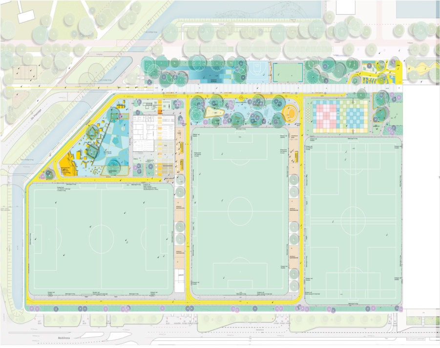
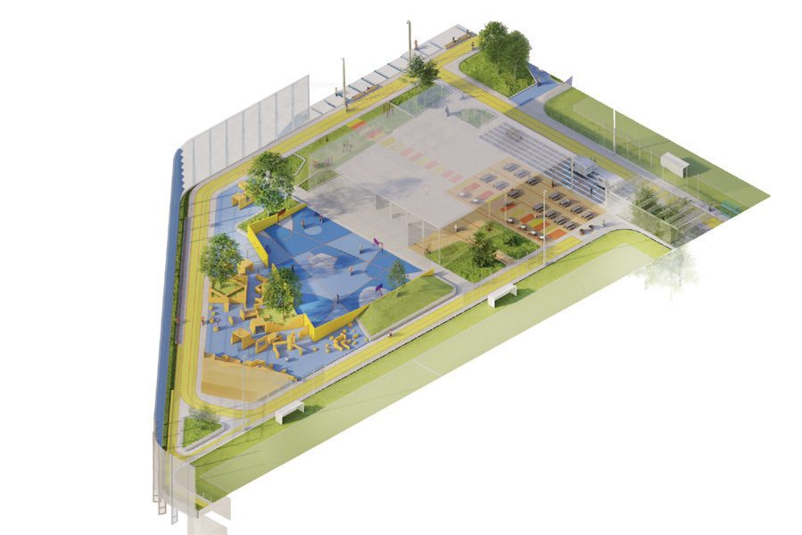
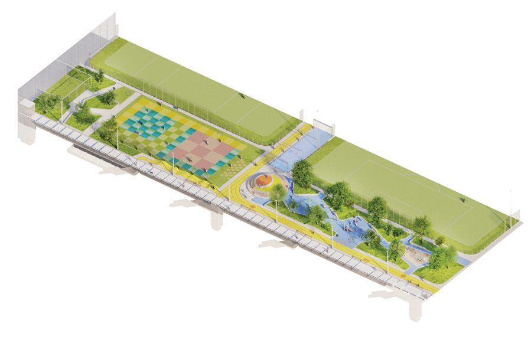
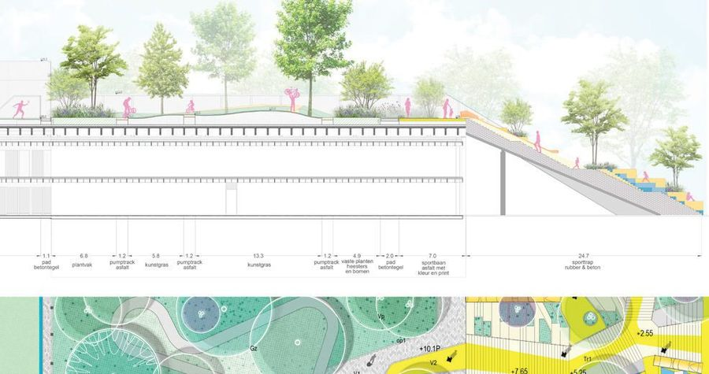
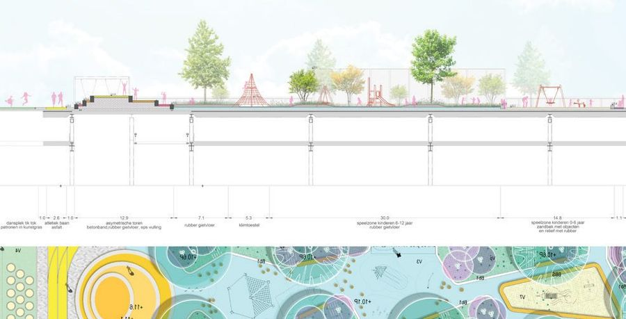
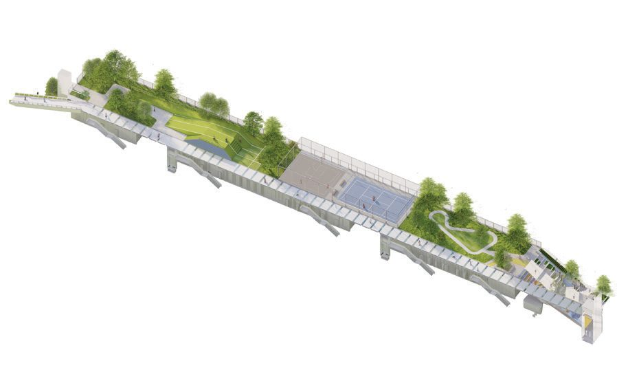
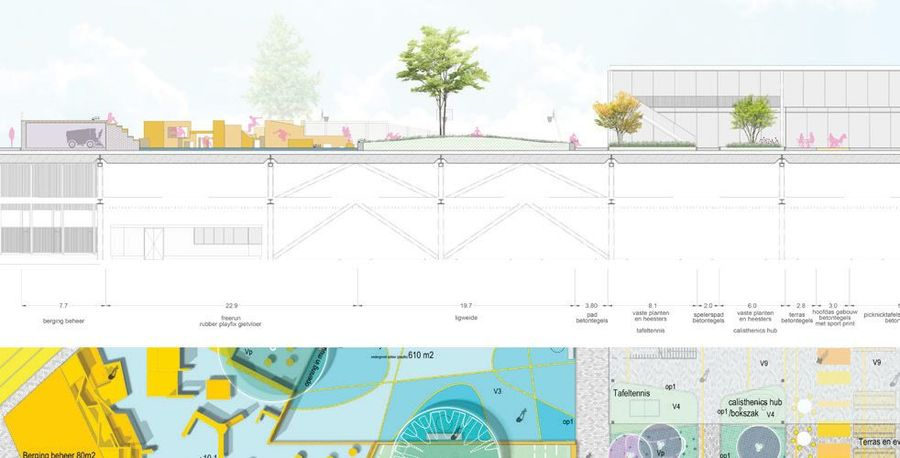
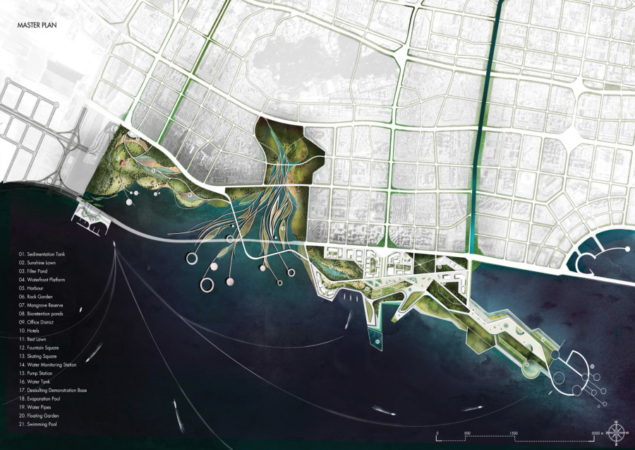

Sport Dak Park
- Place
- Smart Mobility Hub, Amsterdam
- Year
- 2021
- Assignment
- Roof park
- Firm
- Buro Sant en Co
- Design
- 2021
- Status
- SO–DO
- Collaborations
- cepezed
- Team
- Sander Singor, Nina de Munnik

A sports park ten metres up, on the roof of a mobility hub.
With increasing urbanisation and the acceleration of daily life, the need for sport, greenery, relaxation and time with friends and family is greater than ever. At a height of ten metres, a place is being created where all of this is possible: the sports park on top of the future Smart Mobility Hub.

The park is designed so that every user can take it on their own terms — from the (wheelchair) basketball player, the urban athlete and the football club that has its home base here, to the parents bringing children to the playground and the person who simply wants to sit quietly among the greenery.


Its functions are no longer separated from one another but placed in a single integral landscape — organised and unorganised sport meeting in the same place. The park is designed with the input of future users and residents, building a shared sense of pride and of responsibility for it.




Next projectInteractionShenzhen, China, 2017